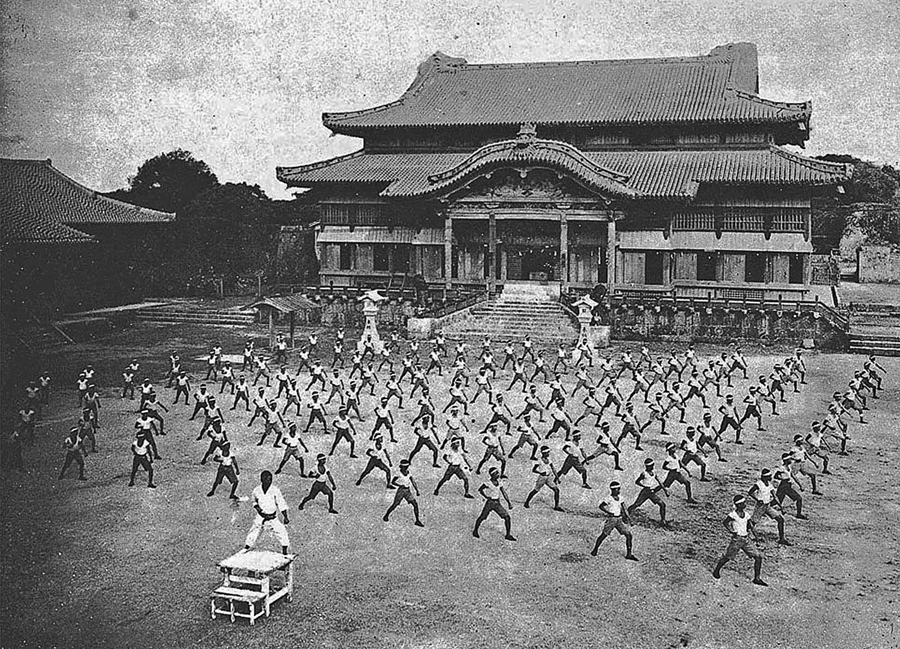
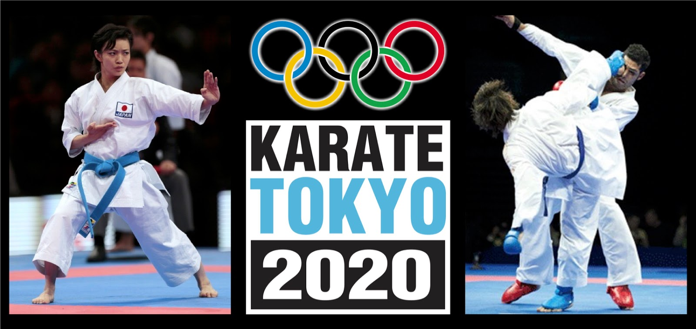

A História do Karatê
O karatê surgiu nas Ilhas Ryukyu, especialmente em Okinawa, atual território japonês. Sua origem está ligada à combinação das técnicas locais de combate, conhecidas como Te ("mão"), com artes marciais chinesas introduzidas através do intenso comércio entre Okinawa e a China. Com a restrição ao porte de armas em diferentes períodos da história local, a população passou a desenvolver ainda mais métodos de defesa desarmada.
Durante os séculos XVII e XVIII, surgiram centros de treinamento nas cidades de Shuri, Naha e Tomari. Cada região desenvolveu características próprias, originando estilos que mais tarde influenciariam o karatê moderno. Nessa época, o ensino era reservado a poucos alunos e os conhecimentos eram preservados principalmente através dos katas, sequências de movimentos que simulam situações de combate.
No final do século XIX, mestres como Anko Itosu iniciaram a modernização do karatê, adaptando o treinamento para ser ensinado nas escolas de Okinawa. A arte deixou de ser uma prática secreta e passou a ser vista também como uma ferramenta de educação física e formação moral.
O grande responsável pela expansão do karatê para o restante do Japão foi Gichin Funakoshi. Em 1922, ele apresentou a arte marcial em Tóquio e ajudou a popularizá-la nacionalmente. Seu trabalho deu origem ao estilo Shotokan e influenciou o desenvolvimento de outros estilos importantes, como Goju-Ryu, Shito-Ryu e Wado-Ryu.

Após a Segunda Guerra Mundial, o karatê começou a se espalhar rapidamente pelo mundo. Soldados estrangeiros e mestres japoneses contribuíram para a criação de academias na Europa, Américas, África e Oceania. Ao mesmo tempo, competições passaram a ser organizadas com regras padronizadas, fortalecendo o aspecto esportivo da modalidade.
A cultura popular também ajudou a impulsionar sua fama. Filmes, séries e outras mídias apresentaram o karatê a milhões de pessoas, aumentando o interesse pela prática tanto como defesa pessoal quanto como atividade física e filosófica.
Um dos momentos mais importantes de sua história ocorreu com a inclusão do karatê nos Jogos Olímpicos de Tóquio 2020, realizados em 2021. Pela primeira vez, atletas disputaram medalhas olímpicas nas modalidades de kata e kumite, consolidando o reconhecimento internacional da arte marcial.
Atualmente, o karatê é praticado por milhões de pessoas em todo o mundo. Embora existam diferentes estilos e objetivos de treinamento, seus princípios continuam os mesmos: disciplina, respeito, autocontrole e aperfeiçoamento constante. De uma arte desenvolvida em Okinawa, o karatê tornou-se um patrimônio cultural e esportivo global.
